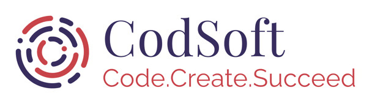
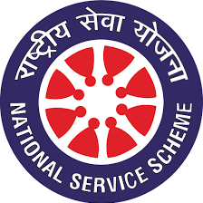
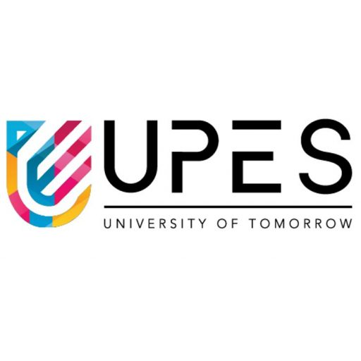

Hi, I'm
I am a Full Stack Web Developer and Machine
Learning Enthusiast who loves exploring the endless possibilities of technology by
solving problems with code and data.
Introduction
Hi, I'm Mahi Attri, a third-year student pursuing a B.Tech in Computer Science and Engineering with a specialization in Artificial Intelligence and Machine Learning from University of Petroleum and Energy Studies, Dehradun.
I am passionate about creating intuitive and dynamic web applications, and I enjoy working on both the visual and functional aspects of software. My academic and project experiences have equipped me with a solid foundation in programming, problem-solving, and innovative technology solutions.
My academic and professional experiences encompass a wide range of skills, from programming in Python and Java to developing complex machine learning models and full-stack web applications. I am passionate about leveraging technology to create innovative solutions and have successfully contributed to various projects and internships, honing my abilities in both research and practical application.
I also have a passion for writing and find joy in sharing my insights and experiences through engaging blogs, detailed research papers, and thought-provoking social media content.
View ResumeTechnology Enthusiast
Software Engineer
Technical & Content Writer
Work Experience
My Journey So Far

Machine Learning Intern
CodSoft
June 2024 - July 2024• Developed machine learning models for Movie Genre Classification, Credit Card Fraud Detection, Customer Churn Prediction, Spam SMS Detection, and Handwritten Text Generation during a virtual internship.
• Applied advanced techniques including TF-IDF, word embeddings, and diverse classifiers such as Naive Bayes, Logistic Regression, Decision Trees, Random Forests, and Gradient Boosting to address complex data challenges.
• Gained practical experience in data preprocessing, model training, and evaluation, contributing to solutions for real-world applications in machine learning and artificial intelligence.

Editorial Team Core Member
NSS UPES
Decemeber 2023 - Present• Crafted compelling content for NSS UPES publications and social media, including posts for Martyrs Day and blood donation camps, enhancing event visibility and engagement.
• Collaborated on strategic content planning and supported event initiatives, contributing to effective communication and successful camp operations.
Editorial Team Core Member
ACM UPES
July 2023 - Present• Led Prodigy 24’s success and actively contributed to strengthening the community within UPES ACM and ACM-W Student Chapters through dedicated involvement.
• Created impactful Instagram captions for ACM UPES, boosting engagement and visibility across social media platforms.

Research Intern
UPES
May 2023 - August 2023• Authored a comprehensive research paper titled “Tiger Poaching in The Sundarbans”.
• Delved into diverse facets of Computer Science, honing skills in research paper composition.
• Executed meticulous data collection and generated graphical representation to bolster research findings.
Social Intern
Indian Development Foundation
June 2023 - July 2023• In-depth Research and Exemplary Execution: Conducted insightful research and submitted comprehensive reports, showcasing strong analytical skills and attention to detail. Successfully carried out various tasks with enthusiasm and precision, consistently meeting and exceeding expectations.
• Effective Communication and UNSDG Proficiency: Interacted seamlessly with students during school visits, demonstrating exceptional communication abilities. Exhibited a thorough understanding of the United Nations Sustainable Development Goals, aligning efforts with global standards.
• Empathetic Engagement and Proactive Creativity: Displayed exemplary care and compassion while working with underprivileged communities, ensuring impactful interactions. Leveraged a creative mindset to develop innovative solutions, contributing proactively to the organization’s objectives.
Projects
Event Ticketing and Registration System
I developed an event ticketing and registration system using Java. This system facilitates user registration for specific events, accommodating multiple users seamlessly. Additionally, I implemented comprehensive functionality for managing registrations across various events, ensuring an efficient and user-friendly experience.
Technologies Used: Java
GithubVehicle Parking Management System
I developed a GUI-based Vehicle Parking Management System for universities using Python and MySQL. This system includes features such as user authentication, parking spot reservation, carpool partner search, and emergency assistance. By integrating a MySQL database, I ensured efficient data handling for user information, reservations, and carpool details.